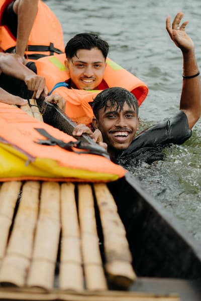

Great trips. Genuine fun. Lasting memories. Our mission is to get you on the river safely and send you home with a smile.



Great trips. Genuine fun. Lasting memories. Our mission is to get you on the river safely and send you home with a smile.
Shem's Rafting Adventure began not with a business plan, but with a man and his love for a river. In 1978, veteran guide Shem Esling bought a single surplus raft and started taking friends down the Roaring Fork from a flat spot near his cabin. "Going rafting with Shem" quickly became the local's choice for a trip that felt less like a commercial ride and more like a day on the river with a friend. Over the years, that one raft grew into a small fleet, and the business was passed down to his daughter, Kaya. But the philosophy hasn't changed. While we now have a proper riverside outpost and modern gear, we still prioritize the slow, authentic experience: reading the river, sharing stories, and enjoying a home-cooked lunch on the bank. Today, we're proud to be a family-run staple of the community, offering adventures that are less about the thrills and more about the timeless flow of the river itself.